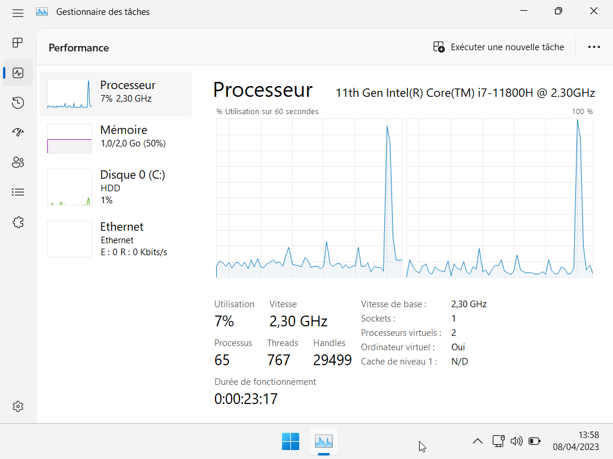
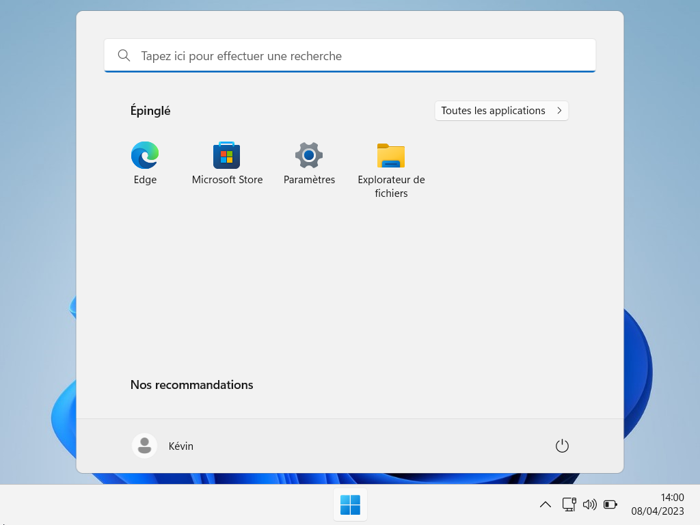

Free and Open-Source
To begin with, KJOS is a free and open source OS.
Minimal Configuration
Specs |
KJOS |
KJOS-Lite |
|---|---|---|
CPU |
1C/2T 2GHz |
1C/1T 1GHz |
RAM |
2GB |
1GB |
Storage |
32GB SSD |
25GB SSD |
Recommended Configuration
Specs |
KJOS |
KJOS-Lite |
|---|---|---|
CPU |
2C/4T 2GHz |
2C/2T 1GHz |
RAM |
4GB |
2GB |
Storage |
64GB SSD |
32GB SSD |

Super Light
KJOS is made for low-end PCs that can't run Windows 11 due to hardware limitations such as TPM 2.0.
Minimal requirements:
Ultra Optimized
Windows is the universal platform to game on. But KJOS is better !
Optimized to be ultra powerful for gaming, ultra efficient for your daily heaviest tasks and battery efficiency for your Laptop !

Debloated to stay focus
Start Menu, Widgets, options enabled in settings... Get rid of Microsoft Services, Components and Telemetry !
Optional Windows Defender Protection
Windows Defender is not installed by default on KJOS but if you need it, you can download it directly from the Microsoft Store !
Downloads
⚠️ Both versions are still in developpement ⚠️
Comparison
Specs |
KJOS |
KJOS-Lite |
|---|---|---|
Free |
✅ |
✅ |
Open-Source Debloat Settings |
✅ |
✅ |
TPM 2.0 Verification Free |
✅ |
✅ |
Debloated ISO |
✅ |
✅ |
Optimized Settings |
✅ |
✅ |
Optimized for Gaming |
✅ |
✅ |
Windows Updates |
✅ |
✅ |
Include Useful Softwares |
✅ |
❌ |
Preinstalled KJOS Official Theme |
✅ |
❌ |
Include Windows' Default Apps |
☑️ |
❌ |
Windows Activation |
❌ |
❌ |
Windows Defender |
üü° |
üü° |